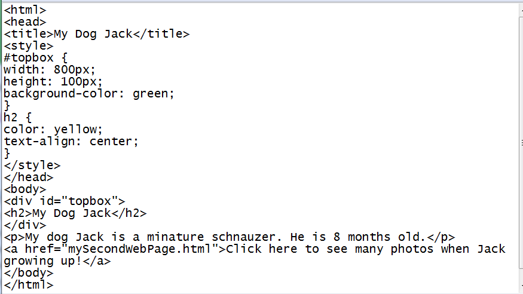

Learn to create your own webpages
Layout and Style
- Create the layout using box model- add style to the heading.
- Two attributes used to define the style of h2
- The attribute color is spelled the American way.
- color: yellow; is the syntax for defining the heading text color as yellow.
- text-align: center; is the syntax for defining where the heading text should be placed inside the topbox.
- You can also use text-align: right; if you want the heading text to be placed on the righthand side part of the topbox.
- check there are no spelling mistakes for attribute names and attribute values.
- Check American spelling is used for the word color
- check no missing : , ; , or {, or }.
Our topbox now contains the heading. The heading text has the default colour black. We need to change the text location and colour to make the topbox of our home page look nicer.
To style the heading text, we need to add some style attributes to the heading tag. In this case the h2 tag.
To style the h2 heading, the following lines of code need to be added:
|
h2 { color: yellow; text-align: center; } |
 Add the above lines of code inside your index.html file. Try to work out where to add those lines independently first. Only if you are stuck, click this .
Add the above lines of code inside your index.html file. Try to work out where to add those lines independently first. Only if you are stuck, click this .

Save your index.html file and open it with a browser or refresh your browser if you have it open already to see the effects.
If you don't get the result right, here are some tips for debugging: